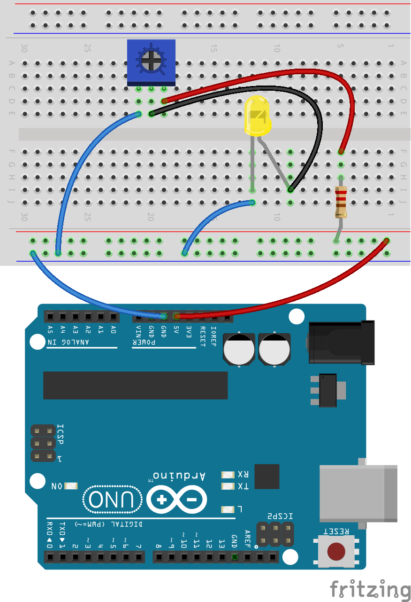

Connect the components according to the following diagram:

Now, try turning on the potentiometer wheel and see what happens!
What happens when you turn the wheel of the potentiometer? Why is that? What do you think the potentiometer does?